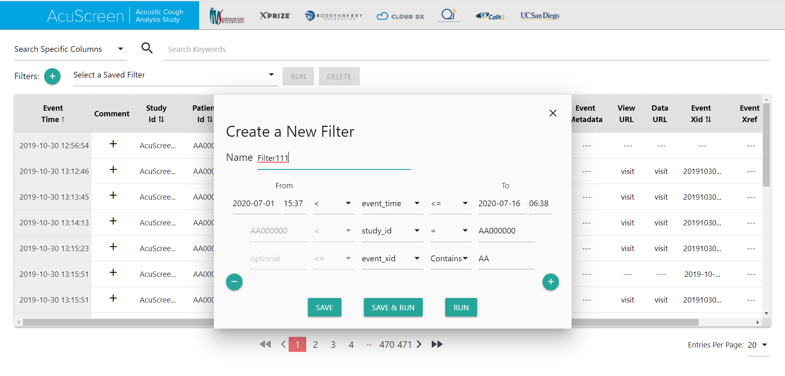

Data Infrastructure -- Event Logging System
Mar 2019 - Nov 2019
Project Overview
Over the course of 9 months, my team and I worked on developing an event logging system for our customer. Our customer eventually used our system to record data from medical equipment used by CoVid19 patients. The developed system consisted of two components: (1) an API for event submissions and event retrievals and (2) a spreadsheet style viewer with filtering, searching, and sorting capabilities.
Technologies
In building the Event Logger, the LAMP (Linux Apache MYSQL PHP) stack was employed. The web application was hosted on an AWS EC2 instance that ran Ubuntu 18.04 (Linux). The backend was built using a PHP framework called Laravel. The frontend made use of HTML5, CSS, and Vanilla Javascript, as well as MaterializeCSS and Bootstrap. Data Infrastructure services employed OAuth2 authorization protocols to ensure security. Swagger was used for documentation.
Project Timeline
March:
- Project introduction, reading through documentation
- Setting up basic schema with minimal parameters and exposing it through swagger for demonstrating what customer can expect in terms of live API
- (GET) /event/{event_id} for retrieving event by event_id
- (POST) /event for storing event; uses body params for specifying params
April:
- Set up live server and hosts basic API and swagger documentation
- Set up very basic spreadsheet UI for viewing events and with searching and sorting capabilities
May:
- Implement Oauth2 authorization for securing API requests and adding to swagger documentation
- Add pagination, events per page, tooltips, and comments using models (per event entry)
- Add validation on data entries
June:
- Clean up UI
- Fixing minor bugs
- Testing by customer
July-August:
- AJAX for spreadsheet live update notifications
- Filtering API (with extensive validation checks)
September-October:
- Add calendar UI for selecting dates in filtering Filtering on the spreadsheet UI
- Add saving and deleting and editing options to preset and saved filters
- Launch product
Figures

Fig. 1 Main Page

Fig. 2 Creating New Filters